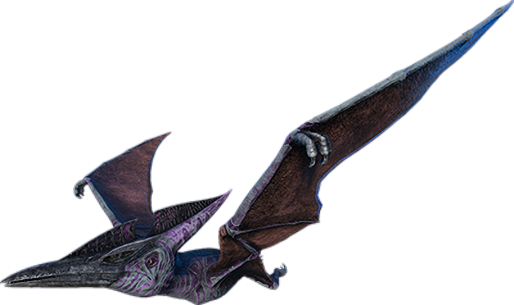

Pteranodon wyvernus is a large pterosaur, capable of flying more quickly than any creature I have witnessed on this Island thus far. It seems to have relatively poor stamina in comparison to its quick speed, however, making frequent pit stops on the beaches before taking off again. While other humans I've seen on the Island still insist on calling it a Pterodactyl, this is inaccurate. Pteranodon wyvernus's poor fighting and defensive skills mean they are likely to scavenge any number of dead animals rather than engage in dangerous combat with other creatures. They also flee at the slightest sign of trouble. Because of this, they are one of the most common creatures to be found darting across the Island's skies.